สูตรการทำ สิ่งสวมใส่ต่างๆ (ว่างๆก่อนปิด CB)
อัพโหลดภาพใหม่เสร็จหมดแล้ว ต้องขอบคุณ Ginaza และ laonoi ที่แนะนำ photobucket ให้ จึงทำให้เสร็จเร็ว มากมาย
----------------------------------------------------
Amethyst Pendent
ทำที่ : ร้านเครื่องประดับ
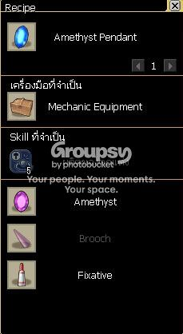
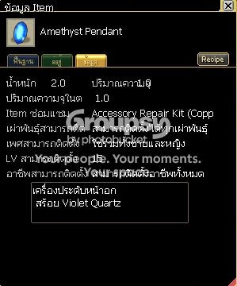
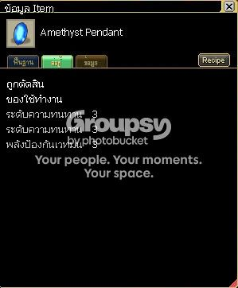
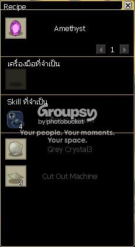
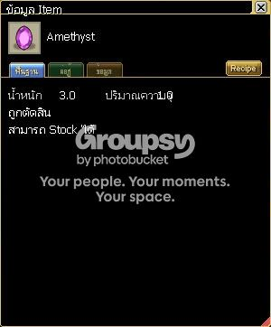
Brooch ทำได้โดยเอา Needle
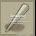
(ที่ทำจาก Bee Poison) มาดัด โดยใช้ คีม ครับส่วน Fixative ทำจาก Raigyou Sweat กับ Seriko ครับ
ส่วน Raigyou Sweat ทำได้โดย

Special THX : Zacool สำหรับของที่ใช้ทำ / Splendid สำหรับสูตร Raigyou Sweat
------------------------------------------------------------------------------------------
Canoechair
ทำที่ : ร้านตัดเย็บ
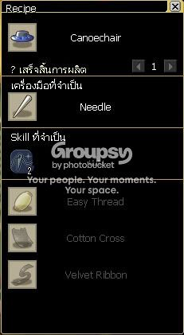
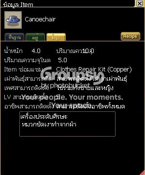
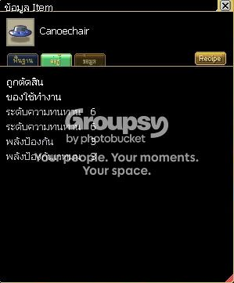
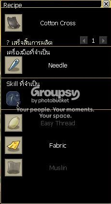
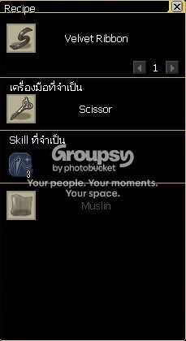
Easy Thread ทำได้จาก

ซึ่ง Crawler Lash ดรอปจาก Sand Crawler
 ทางทิศใต้ครับ
ทางทิศใต้ครับ
Muslin ที่เห็นตกกับตาเลยนะครับ คือ บอสหมี ครับ.... =[]=!!!!
แต่อย่าเพิ่งก่อนเรามีอีกทางเลือกให้ท่าน นั้นคือการ เปิดกล่องไม้ หมายเลข 1 ผมเปิด ประมาณ 100กล่อง ได้มา 3 อันครับ ผมว่าเป็นทางเลือกที่ดีกว่า บอสหมี นะครับ
FauLT เขียน:อ่า ไอเทม Muslin ดรอบจากหมูบ้า Umeza ในดันฟาอีสด้วยน้า ดรอบยากสักนิดนึง(โหดด้วย)
Splendid เขียน:ข้อมูลเยี่ยมครับ 8)
อ้างอิงจากเว็บญี่ปุ่น Muslin ดรอปจาก Cave Rocky อีกตัวนะครับ อยู่ในดัน Cave of Continent ชั้น 3 (ดัน ตอ.เฉียงใต้ หรือดันปลานั่นเอง) กับตัวผมเองยังไม่เคยดรอปครับ แต่ถ้าใช้ตัว Ranger ที่มีสกิลปราชญ์สัตว์อาจจะพอมีโชคบ้าง :wink:
ตัวอย่างเวลา สวมใส่
Special THX : Splendid สำหรับสูตร Easy Thread และข้อมูล / เว็บ data ข้อมูลมอน สำหรับรูปมอน / ท่าน FauLT ผู้รอบรู้
---------------------------------------------------------------------
Chingon Cover
ทำที่ : ร้านตัดเย็บ
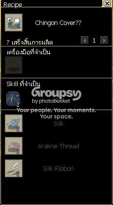
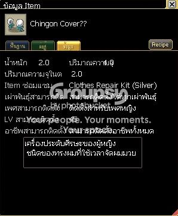
*~[ซิ๊มโบ๊ะ]~* เขียน:
วิธีทำเปาๆ สิ่งที่ต้องมีนะค่ะ ...
1. Crawler Lash 12 อัน ... หาได้จาก หนอนเขียวๆ ตัวใหญ่ๆ อ่ะค่ะ ไอเทมจะเป็นสีขาวๆ คล้ายๆ มาสเมลโล่ *0*
2. Arakne Thread 2 อัน ... หาได้จาก แมงมุม ทุกชนิด ( ดรอปยาก นิสนุง )
3. กรรไกร 1 อัน ... ซื้อได้จากร้านเครื่องประดับ เมือง ฟาอิส ค่ะ
ขึ้นตอนการทำ
นำ Crawler Lash มาแปรรูป ก่อน ให้เป็น Easy Thread ทำทั้งหมดจะได้ Easy Thread ออกมา 12 ชิ้น
นำ Easy Thread ทั้งหมด มาแปรรูป เป็น Silk เราจะได้ Silk 4 ชิ้น ( Silk 1 = Easy Thread x 3 )
นำ Silk มาทำ Silk Ribbon มาเย็บ (ตัด) เป็น Silk Ribbon 2 อัน ( Silk Ribbon 1 = Silk x 1 )
เสร็ดแล้วนำที่เหลือ มาเย็บๆๆๆๆๆ ก็จะได้ ซาลาเปา มาแปะบนหัว *0*
( จริงๆ ไปซื้อ 7-11 ก็ได้นะ แหะๆ )
Special THX : เกรซ (*~[ซิ๊มโบ๊ะ]~*) สำหรับสูตร วิธีทำครับ
-------------------------------------------------------------------------------
Canon Mask
ทำที่ : ร้านเครื่องประดับ
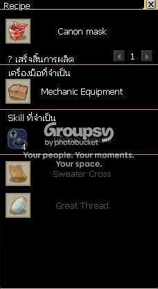
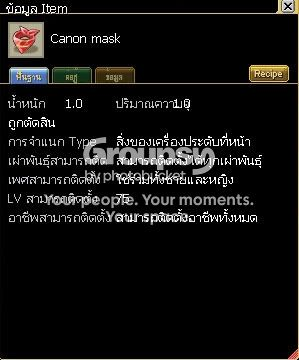
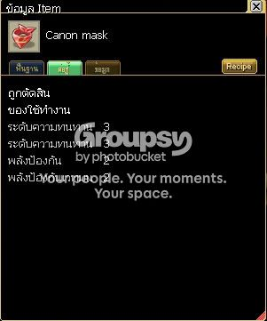
Great Thread ทำจาก Thread (ด้าย) + Row(พาราฟิน)

Leather ดรอปจาก ... V
Splendid เขียน:ช่ายครับ ดรอปจากหมูบ้า Wild Boar แต่ต้องเป็น Ranger ที่มีสกิลปราชญ์สัตว์นะครับถึงจะดรอป(ดรอปแบบโปรโมชั่นเลยครับ แทบทุกตัว ชั่วโมงนึงได้เป็นสิบๆ ชิ้น) แต่ถ้าไม่มีสกิลนี่จะดรอปยากมากหรืออาจถึงขั้นไม่ดรอปเลยครับ
แถวทางเหนือก็ดรอปเหมือนกันนะครับ ไม่แน่ใจว่ามาจาก Polar Bear หรือ White Fang แล้วก็ผมัน Cave of Continent (Rocky, Cave Rocky) ก็ดรอปครับ แต่จะยากกว่าหมู
Special THX : Splendid สำหรับสูตร และ ข้อมูล
-------------------------------------------------------------------------------
Fortuneteller Pants (Orange)
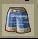
ทำที่ : ร้านตัดเย็บ
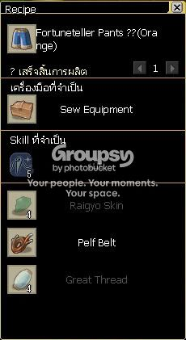
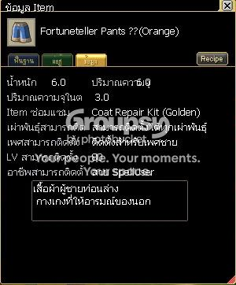
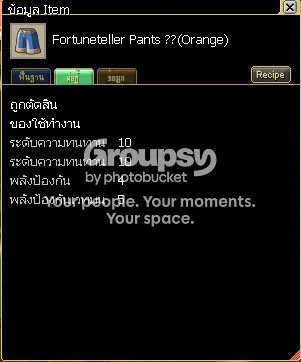
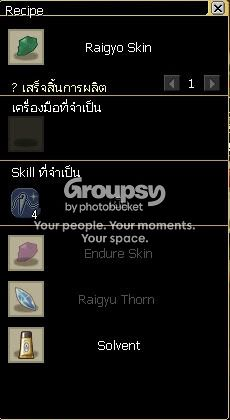
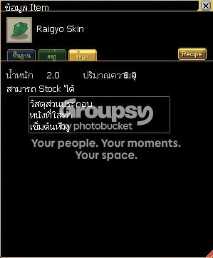
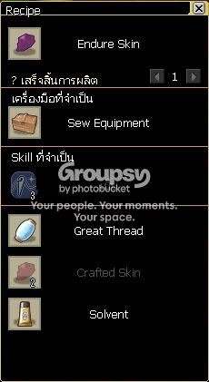
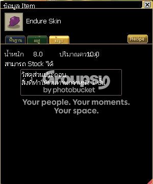
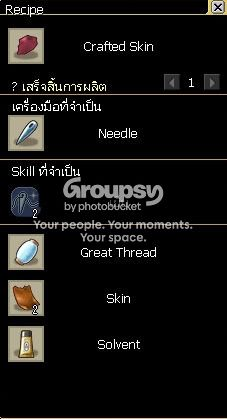
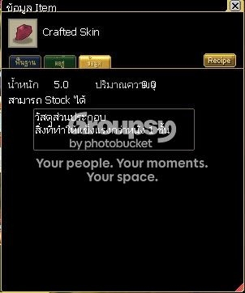
Great Thread ทำจาก Thread (ด้าย) + Row(พาราฟิน)
solvent ทำจาก bark (เปลือกไม้) + ether
skin หาจาก มอนสเตอร์ประเภทสัตว์ เช่น หมา หมี เป็นต้น (แอบขี้เกียจยกตัวอย่าง)
Raigyu Thorn ดรอปจาก Raigyo
 และ ตัวนี้ยังดรอป Raigyou Sweat อีกด้วย
และ ตัวนี้ยังดรอป Raigyou Sweat อีกด้วยSpecial THX : laonoi ผู้ชายใจดีคนหนึ่ง(ลืมชื่อ) และ Zacool สำหรับ Raigyu Thorn
------------------------------------------------------------------
Fortuneteller Skirt (Orange)
ทำที่ : ร้านตัดเย็บ
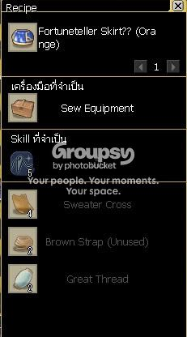
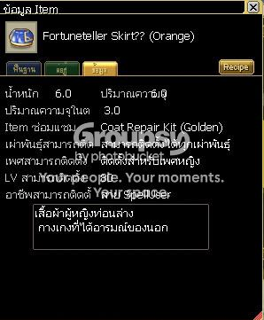
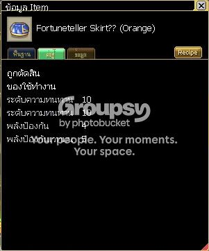
Brown Strap (Unused) ทำจาก Bau skin (เขียนถูกไหมหว่า)โดยใช้กรรไกร ซึ่งดรอปจาก หมา Bau (แต่ดรอปยากถ้าไม่มีปราชญ์แห่งสัตว์)
Great Thread ทำจาก Thread (ด้าย) + Row(พาราฟิน)
Pel Belt ทำจาก Bau skin กับ น๊อต(ซื้อได้ที่ดาวน์ทาว) ครับ (อันนี้ไม่แน่ใจ)
Special THX : โมโม่จัง สำหรับ Bau skin / Splendid สำหรับสูตร
---------------------------------------------------------------------------------
First Aid

ทำโดยเลือก ที่ ผสมยา ครับ


Ether หาซื้อได้ที่ ดาวน์ทาว ครับ
Fabric ทำจาก cotton ซึ่งมาจากต้น cotton / หรือซื้อได้ที่ ฟาสอิส ครับ
---------------------------------------------------------------------------------------------
ขอบคุณ ทุกคนที่ให้ ของ มาลองมั่วๆดูครับ
หวังว่าจะมีประโยชน์ ไม่มากก็น้อยนะครับ
ปล. ยังเหลืออีก 4-5 รายการครับ เดียวมาลงต่อ ครับ
ปล2. ถ้ามีอะไรผิดพลาด บอกได้นะครับ และขออภัยมา ณ ที่นี้ด้วยครับ